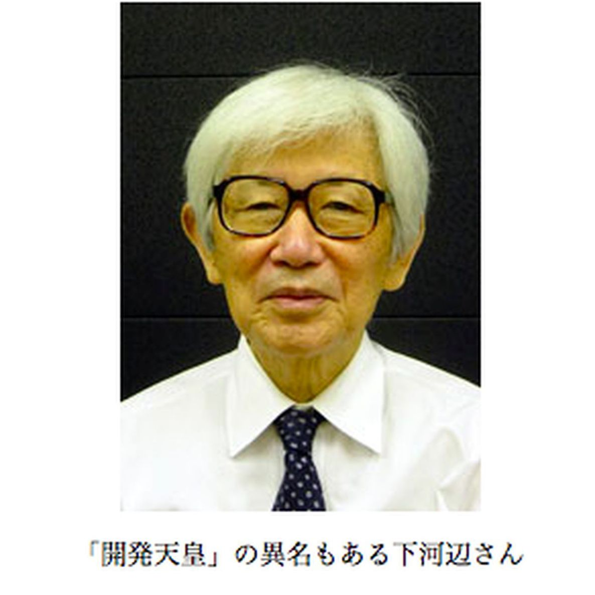
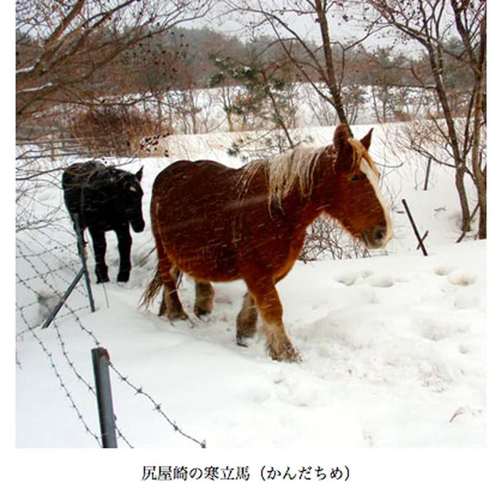

| プロメテウスの罠〔９〕 ロスの灯り「核燃の夢、残った死の灰」 (朝日新聞デジタルＳＥＬＥＣＴ) | |
| 朝日新聞 | |
| (2013) | |
青森県は高レベル放射性廃棄物、いわゆる「死の灰」を生み出す核燃料再処理工場の県内設置を引き受け、福島第一原発の事故を受けても、国が「原子力推進」に立ち返るのを待っている。青森県はなぜ、こんなやっかいなものを引き受けたのか。２０１２年３月から４月にかけて朝日新聞で掲載したプロメテウスの罠「ロスの灯り」全２６回を収録。
内容紹介
青森県は高レベル放射性廃棄物、いわゆる「死の灰」を生み出す核燃料再処理工場の県内設置を引き受け、福島第一原発の事故を受けても、国が「原子力推進」に立ち返るのを待っている。青森県はなぜ、こんなやっかいなものを引き受けたのか。２０１２年３月から４月にかけて朝日新聞で掲載したプロメテウスの罠「ロスの灯り」全２６回を収録。
初出
朝日新聞 二〇一二年三月十九日～四月十四日
第１章 見過ごせない失敗
第２章 「米国の象徴を見た」
第３章 兵士を見送るように
第４章 布団に雪が積もる
第５章 トヨハラよいところ
第６章 会津武士の国替え
第７章 成長、まぶしすぎた
第８章 我田引水、何のその
第９章 「やりましょうや」
第１０章 村中が新築ラッシュ
第１１章 「田植え終わったか」
第１２章 工場で働けばいい
第１３章 口先だけの了解
第１４章 目の前の金銭よりも
第１５章 選挙には勝ったけど
第１６章 乗り気じゃなかった
第１７章 「所得倍増」の足固め
第１８章 空き地があったから
第１９章 「知事にぶつけるさ」
第２０章 初めて金を出した
第２１章 「例の無い干渉選挙」
第２２章 やっぱり戻ると決心
第２３章 女たちのキャンプ
第２４章 大部屋宿舎も造った
第２５章 夢の跡、死の灰だけ
第２６章 核燃なき村を生きる
福島第一原発の事故を受けても、国が「原子力推進」に立ち返るのを待っている県がある。青森県だ。
その青森県で２０１２年１月、見過ごせないほど大きな「つまずき」が起きた。使用済みの核燃料をもう一度使えるよう再処理する工場でだった。
事業者の日本原燃（にほんげんねん）は１２年１月２４日、再処理で出る高レベル放射性廃棄物をガラスで固める試験に向け、最終の作業に入った。
炉に入れてあった模擬のガラスビーズを熱で溶かし、容器にうまく流れ落ちるかを見た。しかし、流速が決められた水準に達せず、作業は中止。試験は延期となった。
社長の川井吉彦（かわいよしひこ）（６８）は１２年２月末の記者会見で「解決困難な技術的課題に直面しているのではない」と理解を求めた。しかし、無理があった。
固化の失敗は初めてではなく、この失敗こそが再処理工場の完成を１８回も延期してきた主因だからだ。
しかも今回の試験は、与党の民主党の議員有志から、核燃料を再処理するのはもうやめようとの意見が出ている中でおこなわれた。
失敗の原因は究明中だが、炉の壁にはりつけてあるれんががはがれ、ガラスを固化体の容器に流し込む漏斗（ろうと）をつまらせた可能性が大きい。
そうならば、この失敗は茨城県東海村の模擬炉で２度起きた失敗と同じだ。日本原燃は、いまだ完成していない技術を青森に持ち込み、実用で使おうとしたことになる。
高レベル放射性廃棄物はいわゆる「死の灰」だ。使用済み核燃料を再処理しプルトニウムとウランを取り出した後に残る。半減期が長い様々な核物質からなり、放射能量は固化体１本で２京（けい）ベクレルもある。表面の放射線量はできあがった時点で毎時１５００シーベルト。近づけば１分以内に死ぬ。
青森県は、高レベル放射性廃棄物を生み出す核燃料再処理工場の県内設置を引き受けた。それだけでなく、仏英につくってもらったガラス固化体１４４０本を「一時的に」貯蔵する施設も引き受けた。すでに１４１４本を受け入れている。
今の状態で青森県側から、核燃料の再処理をやめて、という要望はない。最終処分地が決まっていないのにそんなことをして、「一時貯蔵」という約束がなくなり、永久に置いておかれては大変だからだ。青森県が原子力開発の継続を求める背景はここにもある。
青森県はなぜ、こんなやっかいなものを引き受けたのか。それを知ろうとするなら、今から５０年ほど前、ロサンゼルスの街の灯（あか）りに取りつかれた一人の男の話から始めなければならない。
１９６３年９月２２日午後８時。旅客機がロサンゼルス空港に向かって高度を下げた。その機内で、窓に顔をはりつけている日本人がいた。
男はこれまで、機内の他の乗客の様子ばかり気になっていた。欧米人が深くしっかり座っているのに、日本人の座り方がだらしない。右左に傾いて......。それが今や、ロスの夜景の明るさに夢中になっている。
男の名は北村正哉（きたむらまさや）（当時４７）。後の青森県知事だ。しかしこのときはまだ青森県議の３期目だ。酪農視察の団員として、他県の代表とともに欧米に向かう途中だった。
総勢は１２人。アメリカやカナダ、西ドイツ、アラブ連合、香港など１４の国と地域を見てまわる計画だった。当時の為替レートは１ドル＝３６０円。旅費だけで１人数百万円もかかった。一行は日本の酪農の将来を背負っていた。
しかし、ひとり北村は違った。
帰国早々に著した「牛のよだれ 欧米酪農視察紀行」（三沢青年会議所）に、北村は酪農の話はそっちのけで、こんなことを書いていた。
「一直線に灯で彩られた幅広い道路や点々と際立って明るく紅（あか）い繁華街、黒々と散在する公園、その他の無住地帯、かっと輝くスタジアム。これらの景色を飽（あ）かず見下しながら、私はここにアメリカを見た。広いという点でずば抜けたアメリカ、その広いアメリカの象徴としてのロスアンゼルスを見たのである」
帰国後の北村の動きは早かった。
経済企画庁で調査官をしていた下河辺淳（しもこうべあつし）（当時４０）を、下北に連れて行く。下河辺はそのころ全国総合開発計画を推進。のちに阪神・淡路大震災復興委員長を務めた人物だ。
ねらいは下河辺を通じて、半島の付け根部分を陸奥湾（むつわん）から小川原湖（おがわらこ）にかけて覆い尽くす巨大開発を、次の全国総合開発計画「新全総」に盛り込ませること。「むつ小川原開発」のスタートだった。
この開発計画は、第三セクターが２５００ヘクタールもの土地を所有したものの、当て込んだ鉄鋼会社や石油化学会社は来なかった。その結果、三セクは破綻（はたん）することになる。
北村は、なぜこのような巨大開発をやろうとしたのか。
開発の失敗が確定し、代わりに来た核燃料サイクル基地の建設がすでに始まっていた９４年７月、知事になっていた北村に、その疑問をぶつけた。北村は答えた。
「下北半島を青森のロサンゼルスにしたかったんだ」
１２年３月、元経済企画庁調査官の下河辺淳に会った。元青森県知事の北村正哉が県議時代、下北開発を働きかけた人物だ。
あれから４８年。全国総合開発計画づくりにかかわってきた下河辺は８８歳になっていた。
青森県が巨大開発の誘致に熱心だったのは記憶している。しかし県議時代の北村と下北半島に行ったことは覚えていなかった。
「あそこには年中行っていたもので......」
１９６０年代半ば、下河辺は、東京、大阪から瀬戸内にかけての太平洋ベルト地帯にはもう石油化学工場はつくれないと考えていた。
「事故が起きたときに取り返しがつかない、というのが一番の理由でしたね」
では、下北半島は実際に見てどうだったのか。
「小川原湖（おがわらこ）の方は外洋だからいい。陸奥湾（むつわん）はだめだと考えました」
実現性については？
「財界人が、消費地から遠いといやがっていましたね」

中央の政財界の期待はそれほど高くなかった。しかし青森県議の北村は、土地の広さと湖沼の多さで、下北半島は石油化学コンビナートの適地だと信じて疑わなかった。
なぜ、巨大開発をあの場所で進めようと思ったのか。９４年、北村は私にこう語っている。
「小川原湖やその北の尾駮沼（おぶちぬま）などの水に注目した。江戸時代にあの辺りを治めていた南部藩（なんぶはん）の野辺地忠左衛門（のへじちゅうざえもん）は『湖沼群を利用できぬ者は為政者にあらず』といっていた。太平洋に面した広い土地もある。あれだけ条件のいい場所は他にない」
県民の貧しさを北村は憂えていた。
「中学を出た子どもが、集団就職で東京に出て行った。青森や弘前の駅では、その子たちをブラスバンドでジャンジャンやって見送るんだよ。まるで出征（しゅっせい）兵士を見送るみたいに。これは悲劇だった」
北村が、下北半島を「青森のロス」にしようと夢を描いていた６４年３月、中学の卒業式を終えたばかりの少女が一人、三沢駅から、上野行きの集団就職列車に乗り込んだ。
３月なのにまだ寒い片側駅舎には、ブラスバンドどころか、見送る家族の姿もなかった。
少女の名は磯崎慶子（いそざきけいこ）。後に日本の原子力政策の矛盾を、六ケ所村から世界に発信する、菊川（きくかわ）慶子だった。
核燃料サイクル基地ができた青森県六ケ所村（ろっかしょむら）の南西部の丘陵に、豊原（とよはら）と呼ばれる集落がある。菊川慶子は、豊原の開拓民の次女として１９４８年、青森県三本木町（さんぼんぎまち）、いまの十和田市に生まれた。
６４年、１５歳のとき、三沢駅から集団就職列車で上京した。見送りはだれもいなかった。
「両親も祖父も農作業が大変でとても三沢まで見送りなんかに出てこられなかったのです」
中学の時、慶子は住み込みで三沢の親戚の洋服店を手伝っていた。
「その親戚も、卒業後も私が手伝うものと信じていたので、やはり来てくれませんでした」
「豊原」の地名は、この地区の開拓民が樺太（からふと）の豊原、いまのロシア・ユジノサハリンスクからの引き揚げ者だったことに由来する。
開拓民は、三本木の引き揚げ住宅から豊原に通った。汽車を乗り継いで大湊線の有戸（ありと）駅に出る。そこから十数キロ歩き、豊原で開墾をし、夜に三本木に戻った。
「私は母におぶられていましたから覚えていません」
３歳上の姉の記憶だと、駅から原生林の中を歩き、丸木橋を渡り、峠をいくつか越えてようやくたどり着く場所だったという。
やがて「掘っ立て小屋」が建つようになり、開拓民は豊原に住むようになった。慶子が３歳のときだ。
「二重窓ではありませんから、冬は家の中に干した洗濯物がそのままの形で凍ってました」
眠っている間に、布団によく雪が積もった。
慶子の両親は木を切り倒し、根っこを掘り起こした。全部耕すと大変なので、何本か筋をつくり、そこだけ畝（うね）を切って豆をまいた。
豆の根が硬い土をくだき、地味が肥えてくると、アワやヒエなどの雑穀をまいた。続いてナタネを育て、主食用のジャガイモをつくった。
男たちは冬になると山に入り、コナラやヤチダモなどで炭を焼き、現金収入を得た。炭にするのに適当な木がなくなると出稼ぎに出た。
六ケ所村では夏に、冷たい東風のヤマセが吹く。米はつくれず、金を払って買わなければいけなかった。「そのためどこの家も借金が積もりました」
農耕に馬を使うようになり、それでまた借金が増えた。
青森の夏の夜明けは早い。慶子の両親は、夏は午前３時から働くようになった。
菊川慶子の両親は豊原の開拓地で、夏は午前３時から畑に出た。
慶子の日課はランプ磨きだったが、小学生の夏休みはダルマストーブの火おこしも役目に加わった。
ストーブは上で煮炊きができるよう、扁平（へんぺい）型になっている。それに薪（まき）をくべ、火をおこす。
「何にでも使えて便利なストーブでしたね」。暖房はヤマセのせいで夏休みの時期も必要だった。
活発な小学生だった。山賊ごっこやターザンごっこ、そり滑り。分校の友達と、毎日、自然の中で遊び回った。遊びのルールづくりはもっぱら慶子が担当した。
「このときの工夫の経験が、反核燃運動で機動隊を出し抜くアイデアにつながったのかも」
夏休みには盆踊りをした。新しい集落なので祭りの道具は何もなく、太鼓の代わりにドラム缶で音頭をとった。北海盆唄や炭坑節とともに、豊原音頭を踊った。
「ここさトヨハラよいところ」
繰り返し部分だけであるが、樺太（からふと）時代から歌い継がれてきた歌の一節をいまでも覚えている。
だが、小学校高学年になるとドラム缶の盆踊りはなくなった。
「農作業がたいへんで、盆踊りどころではなくなったのです」
歩調を合わせるかのように、家の中も暗くなった。
父親が出稼ぎに出る冬はよかったが、春から秋は両親のけんかが絶えなくなった。慶子はこれも農作業の大変さが原因だと思った。
中学生になった。初めはうちから４キロ離れた千歳中学校に通った。
行き帰りはひとりぼっち。それでも灰田勝彦（はいだかつひこ）の「新雪」や伊藤久男（いとうひさお）の「山のけむり」を、坂道では「峠のわが家」を大声で歌いながら登下校した。
だが、両親の絶えないけんかにとうとういたたまれなくなる。三沢の親戚の洋服店を住み込みで手伝うことにし三沢第一中学校に転校した。
そのころ三沢では、県議だったころの北村正哉が、巨大工業開発で県を豊かにする考えにますます傾斜していた。
開拓民が必死に取り組む農業、自分が世界一周までして視察した酪農、目前に広がる豊かな漁場――。そうしたものへの思いを吹き飛ばすのに、ためらいはなかった。
なぜそんな考えを持つようになったのか。北村家の系譜をさかのぼると、彼の祖先も「入植者」だったことに気がつく。
１８７０年春。新潟港からアメリカの外輪蒸気船「ヤンシー号」が北に向けて出港した。乗せられていたのは、戊辰（ぼしん）戦争に敗れた旧会津藩士（あいづはんし）とその家族だった。
幕末の雄藩、会津２３万石は、賊軍の汚名を着せられ、国替えさせられた。明治に起きた国替えである。会津武士とその家族計１万７千人余りは、ヤンシー号や陸路で青森に向かった。その中に、元知事、北村正哉の曽祖父、豊三（とよぞう）がいた。
１８７１年の廃藩置県までわずか１年余だけ存在した藩がある。青森の「斗南藩（となみはん）」。いまの青森県むつ市を中心とする下北半島の一帯と、少し離れた三戸（さんのへ）郡を中心とする内陸部だ。それが彼らが行き着いた土地だ。米作には向かなかった。
北村の長男、正任（まさとう）（７０）は毎日新聞社の元社長で、今は相談役をしている。彼によると、豊三は三戸のほうに落ち着く。廃藩置県になると、藩の重役の広沢安任（ひろさわやすとう）とともに小川原湖のほとり、いまの青森県三沢市谷地頭（やちがしら）に移った。正任の名は安任にあやかったものだ。
豊三の子で北村の祖父にあたる要（かなめ）は、広沢の右腕となって、西洋式の大牧場を開くのを手伝った。要は続いて、いまの六ケ所村に牧場を開いて牛の飼育に努め、その後、三沢市岡三沢（おかみさわ）に「北村牧場」を開き、馬を育て始めた。
要の娘婿（むすめむこ）で北村の父にあたる直枝（なおえ）も馬を生産した。北村は、盛岡高等農林学校獣医科から帝国陸軍に進み、軍馬の専門家になった。
北村の前任の青森県知事、竹内俊吉（たけうちしゅんきち）は、北村のこうした経歴を知っていて、「最もよいインスペクター（調査官）」として、世界一周酪農視察の県代表に任命した。
しかし「ロスの灯（あか）り」を見てしまった北村は、青森は農業より工業で豊かになるべきだとの確信を強めて帰国した。
北村は、自著「牛のよだれ」で、日本農業の近代化を目指す国の構造改善事業に「もどかしさを感ずる」としてこう記した。
「残された手は、日本全土に拡（ひろ）がる高原地帯、傾斜地帯の農地化であり、牧草地化ではなかろうか。（中略）この方向に向けて諸施策が進められない限り、酪農の将来に対して大きな不安を感ぜざるを得ない」
そこまでやらないと、日本で酪農を成功させることなどできない。そういう結論だ。北村は同時に、工業開発についても会津人らしい考えを熟成させていた。
青森県知事時代の北村正哉は、西国出身とみると風変わりな質問をし、反応をみるのが好きだった。１９９４年、大阪出身の私もその対象となった。
「きみのおじいさんは戦前、何をやっていたのかね」
大陸相手の貿易商を営んでいた、と答えると、にやっと笑ってわが家の食卓の様子をいい当てた。
「きみの家では、シジミ汁のシジミの身は食べんだろう？」
シジミは小川原湖の名産品だ。北村の長男正任によると、北村はシジミ売りが小さなシジミを売りにくると「こんな小さいうちに取るやつがあるか」としかっていたという。
北村は「大阪の商家出身の兵隊さんがみなそうだった」とタネ明かしをした。ぜいたくを戒めたあとも質問は続く。
「きみは、東北が貧しいのは雪深いせいだと思っていないか」
まごつきながらもそうだと思うと答えると、北村は真顔で否定した。
「ちがう。光（ひかり）、下松（くだまつ）、徳山（とくやま）とつらなる工業地帯。あれは明治維新以来、政府が資本を集中投下してきたからできたのだ」
北村は県名をいわなかったが、三つの都市は山口県にある。官軍の中心の長州である。
「きみは北海道の道路を走ったことはあるか」
「北海道の道路はすばらしい。路肩や歩道を見れば、つくりの違いがよくわかる。北海道・沖縄開発庁予算というのは、実にうらやましい。東北開発庁というのがあってもいいと思わんか」
北村の考えでは、開発というのは、まず第一歩は政府の資本投下があるべきだった。
ロサンゼルスが急成長したのも、南カリフォルニア一帯に用水と電力を供給するフーバーダムの建設、という政府資本の投下があったからこそ、と考えていた。
ロサンゼルスは、市ができたときわずか１６１０人しか市民がいなかった。しかし、その後１００年で２００万人都市に成長していく。北辺の地の政治家、北村にとってはまぶしすぎた。
青森県議だった北村は１９６５年３月、県政史上初の代表質問者として登壇し、自らの工業開発の思想と、県民所得向上策を披露した。
あまりにも巨大な構想に、周囲の反応は鈍かったが、北村はこれで県政の将来を握るきっかけを得た。
１９６５年３月５日の青森県議会は、さながら県議北村正哉の意見発表会だった。
工業開発思想と県民の所得水準向上策を、彼は存分に披露する。ハイライトは次の部分だった。
「化学工業立地の最大の要件は港湾と用水と土地であります。我田引水のそしりを免れないのでありますが、この三つの立地条件を十分に満たしてあまりある場所、それは小川原湖であります」
海水と淡水の混じり合う小川原湖を、間仕切りして港湾化すれば、工業用水はふんだんにとれるようになる。大型タンカーも入って来られる。土地はもともと広い。
後はおのずと石油化学コンビナートができる。そうすれば県民の所得水準は全国並みになる――。
青森県はそのころ、県内で豊富な砂鉄と針葉樹、石灰石を使い、製鉄業や製紙業、セメント工業をさかんにしようと考えていた。
北村はこうした工業を「資源型工業」と呼び、「将来性に限度がある」と一蹴する。県の活路を石油化学に求めるよう迫った。
政府による資本投下こそ重要だ。それを説明するため、得意の「北海道との比較論」も飛び出した。
北海道では、大正時代になる前から各地に巨大な煙突が立ち並んだ。その工場のほとんどは官営から出発し、「目玉の飛び出るような」額の政府の財政投融資を受けた。その結果、道民の所得は青森県民の１・５倍に達している、と主張した。
工業開発の目標は県民所得の向上にある――。
当時、青森県は長期経済計画で、７０年の県民所得水準を全国平均の８５％にすることを目指していた。北村はそれにもかみつく。
「悲憤を覚えます」
「青森県の人もまた厳然として日本人であります」
しかし、この日の県議会で、北村の考えをにわかにのみ込める人は少なかった。
下北半島は、近くに大消費地がない。そこに１０年ほどで巨大な工業地帯をつくり、県民の所得を全国平均まで引き上げる。そんな考えに誰もついていけなかった。
知事の竹内俊吉は北村に対し「資源型工業の方が、地方開発における速度の点から考えたならば本当だ」と答弁。にべもなかった。
ところが６７年春、竹内は突然、県議の北村を副知事にしてしまった。
１９６５年３月の県議・北村正哉による代表質問の後、北村によると、知事の竹内俊吉はしばらく迷っていたという。
下北で、北村のいう石油化学中心の巨大開発をやるか。地元資源を中心に地道な工業化をやるか。
北村の県議会での質問に竹内は、砂鉄や針葉樹、石灰石といった県内の資源を使う「資源型工業」の方が本当だ、と答弁していた。
しかしその直後の６５年４月、下北半島の砂鉄を使うはずだった製鉄会社が、操業開始前に解散した。採算が合わないという理由で、設立からわずか２年だった。
下北半島の付け根、六戸町の製糖工場も６７年、閉鎖された。粗糖の自由化で不採算になったためだ。進出からわずか５年。県が栽培を奨励したビートを使っていたので、農家が打撃を受けた。東京に集団就職した菊川慶子の実家も損が出た。
迷う竹内を、北村はこう説得したという。
「やりましょうや。これ以外に青森では大きな開発はできない」
北村が副知事に任命されたのはその直後だった。
それを境に、青森は県として下北半島への巨大工業開発づくりに突き進む。
６８年末、通商産業省が出した「工業開発の構想（試案）」に下北の巨大開発構想を盛り込んでもらった。
６９年３月、財団法人・日本工業立地センターに「陸奥湾・小川原湖大規模工業開発」をまとめさせた。
そして、６９年５月、経済企画庁調査官の下河辺淳がつくる「新全総」に載せてもらった。わずか２行だけだったが。
その２行のため、北村は「経企庁に説明に行き、回答をもらい、また説明に行く。７回ぐらいやった」。
県はこの年８月、「陸奥湾・小川原湖地域の開発」をつくった。
鉄鋼、石油化学などの臨海型装置産業を中心に、非鉄金属、化学、造船、自動車、電気機械などの機械工業を配置する。原子力発電所をつくり、鉄鋼などの基幹産業とでコンビナートを形成する――。
工業用地は約１万５千ヘクタールと巨大で、工業生産額は年５兆円、従業員は１０万人超。３千ヘクタールの新市街地を造成し、２０万人が定住するとも描かれていた。
７１年５月、菊川慶子が六ケ所村に戻ってきた。結婚して、出産のための里帰りだった。実家の様子は一変していた。
出産のため１９７１年５月に青森県六ケ所村に戻ってきた菊川慶子は、新築中の実家の立派さに驚いた。
最初の家は、風よけのため低地に建てた掘っ立て小屋だった。開拓に入って数年で、そこから抜け出し、高台に建てた「少しましな家」に移っていた。その横にまた新しい家を建てていたのである。
あたりを見てまた驚いた。村全体が新築ラッシュにわいていた。
「信じられないほど高い値段で土地が売れたんです」
里帰りの２年前、６９年５月３０日、経済企画庁調査官の下河辺淳らによってつくられた新全国総合開発計画（新全総）が閣議決定された。
それには、下北半島の大規模開発について、「小川原工業港の建設等の総合的な産業基盤の整備により、陸奥湾、小川原湖周辺ならびに八戸（はちのへ）、久慈（くじ）一帯に巨大臨海コンビナートの形成を図る」とわずか２行記されていただけだった。
その前から東京の不動産業者が下北半島に押しかけ、あちこちで土地を買いあさり始めた。
慶子の実家は、工業開発区域から外れていた。それでも買い手があらわれ、多額の現金を手にすることができた。
慶子の実家は馬を使って農業をしていたので、えさの採草地を持っていた。薪（まき）が暖房源で生活源だったので薪を切る山も持っていた。
「それをいくらか売ったのだそうです」と慶子はいう。
村人たちは家を建て替えただけではない。車や電話、テレビや冷蔵庫などの家電製品を買いそろえた。積もり積もった借金も消えた。
慶子の実家は、車にまでは手を出さなかった。だが、少し後になってトラクターは買った。それで農作業が楽になった。
弟は、八戸市に下宿させてもらうことができた。そこから工業高等専門学校に通った。
「両親は、開発のおかげで土地が売れて借金から抜け出せた、ようやく人並みの生活ができるようになった、という意識のようでした」
村は景気がよくなったが、工業開発に対する不安も高まっていた。なりわいの基である土地や漁業の権利を売って現金を得る。そんなことをして、その後どうやって暮らしていくのか。懸念する人もいた。
県の計画が、どうも大風呂敷すぎるらしい、ということが村人にとって気がかりだった。
北村正哉の前任知事、竹内俊吉にはこんなエピソードがある。
下北半島の向かい側、津軽半島の旧車力村富萢（しゃりきむらとみやち）というところの中学校が統廃合されるという話になった。
困った村民が、青森市の県庁まではるばる陳情にやってきた。
竹内は会うなりいった。
「言いたいことはわかった。さて、おめんだち、田植え終わったか。なに、してねえ？ 今日はひとまず戻れ」
村はこの日が田植えの最適日だった。村民は知事がそんなことまで気を配ってくれたことに感動した。１９６４年ころの話だ。
旧出精村（しゅっせいむら）という小村の農家出身の竹内が、開発志向の北村を副知事にし、青森県は変わっていく。
７１年３月、用地買収を担当する財団法人「むつ小川原開発公社」と、用地造成と分譲を担当する第三セクター「むつ小川原開発株式会社」が設立された。
公社は県が資金を出してつくり、職員を派遣した。
株式会社は国と県のほか、経団連加盟の約１５０社が出資した。
この２社に、基本計画の調査設計を担当する株式会社「むつ小川原総合開発センター」が加わる。
３社は、開発への道を猛進し始めた。下北の巨大開発の進め方が「トロイカ方式」と呼ばれるのはこのためだ。３頭立て馬車である。
７１年８月１４日、県が下北半島の住民に、開発構想と住民対策の案を示した。
その２年前につくった「陸奥湾小川原湖の開発」では、工業用地は１万５千ヘクタールだった。それが「構想」では９５００ヘクタールに減った。
３０万トン級の船が入れる港湾と、巨大石油タンク群という、陸奥湾側の計画が消えたためだ。
陸奥湾のホタテ生産者が、革命的な稚貝育成法を編み出した。杉の葉入りのタマネギ袋で捕らえるという簡単な方法で、ホタテで生計を立てることに自信を持つ。彼らが団結し、開発を拒絶したのである。
「陸奥湾小川原湖開発」はこれを境に「むつ小川原開発」になる。
一方、太平洋側は大騒ぎになっていた。「構想」で、六ケ所村と三沢市を中心に２０２０世帯９６１４人、３４集落が移転の対象となると明らかになったためだ。
住民に不安の声が高まる。開発を拒絶する人たちの先頭に立ったのは寺下力三郎（てらしたりきさぶろう）（当時５９）。六ケ所村の村長だった。
開発拒否の村人の先頭に立った六ケ所村長の寺下力三郎は、村民に「鹿島開発」を見に行かせた。約１千万円の予算をつけた。
２０余年後の１９９３年８月、寺下は視察のねらいを私に語った。
「農民が農地を売ったらどうなってしまうのか、鹿島の農民に話を聞いてくるべきだ。その上で開発とは何か考えよう、ということでした」
鹿島開発とは、茨城県南部の鹿島灘に面した地区の開発のことだ。
砂浜にＹ字形の掘り込み港湾をつくり、鉄鋼、石油精製、石油化学の工場を配置した。社会科の教科書にも登場した大型開発だ。
下北の太平洋岸と鹿島の海岸は、その地形、砂浜、近くに航空基地があるなど、うり二つだった。
さらに、むつ小川原開発と鹿島開発は、砂浜に巨大な港をつくり、石油化学コンビナートを誘致する点でもそっくりだった。
「農工両全（のうこうりょうぜん）」
鹿島開発を進めた茨城県知事の岩上二郎（いわかみにろう）は、この標語を掲げ、農業もしっかり続けていくとの姿勢を示した。それで農民を安心させ、土地を手放してもらおうとしたのだ。そのやり方はこんな具合だった。
開発対象の３町村の全地主に所有地の４割を提供させ、その代金を払う。そのうち開発区域の地主には、提供させた土地を集めてつくる代替地から、元の所有地の６割に相当する分を渡す――。全員が公平に４割減り、お金が入る。開発区域の農民は代替地で農業ができる。「六四方式」と呼ばれた。
だが寺下は鹿島視察で、代替地が都市化の波に洗われたり、農民が多額のお金でぜいたくにおぼれたりし、農業を続けられなくなっていくことに気づく。
寺下が下北半島の巨大開発を拒否したのは、戦前の朝鮮半島で見たのと同じだと思ったからだ。当時、寺下は現地の窒素肥料の会社で働いていた。日本人が「幸せになるためだ」と、朝鮮人の土地に住宅や工場、発電所をつくるたびに、朝鮮の農民が結局は生活基盤を失い、没落していくのを見た。
「開発は住民を幸せにしない」。寺下は鹿島視察で確信を深めた。
しかし、青森県の方法は、鹿島より乱暴だった。農業はやめて、工場で働けばいいとして、基本的に代替農地を用意しなかった。農業から工業への転換こそが所得向上の道とする、北村正哉の考え方からいくとごく自然な行為だった。
「無責任収用」――。
開発拒否を訴えた六ケ所村長の寺下力三郎は、かつて青森県の土地買収方法をこう表現した。
「収用」とは、行政が道路など公共物をつくるときに、法律によって強制的に住民を立ち退かせる手段のことだ。下北に進出するのは民間企業だから、法的強制力は使えない。
にもかかわらず寺下が「収用」と呼んだのは、政府が異常なまでに買収の便宜をはかり、青森県は住民に対し、あたかも強制力があるようによそおったからだ。
最たるものが１９７２年９月の田中角栄内閣による閣議口頭了解だ。
閣議決定でもなんでもない、口先だけの了解だ。しかし青森県はこれを錦（にしき）の御旗（みはた）とし、自分たちの計画を「国家的プロジェクトだ」というようになった。
口頭了解は、税務当局が、むつ小川原開発公社による土地の買収を特別扱いする呼び水にもなった。
北海道苫小牧市立中央図書館に、その記録が残っていた。
「土地譲渡所得の１５００万円特別控除対象」とする文書がそれだ。
文書が北海道に残っていたのは、むつ小川原開発と同時期に、同種の「苫小牧東部開発」が進められていたためと思われる。
むつ小川原開発公社に土地を売った地主は所得税の課税評価で１５００万円も特別控除を認められる。これで公社はさらに農民に土地を売らせやすくなった。
農地を工業用地に転用するのは、農地法によって厳しく制限されている。しかし政府は、人口１万２千人の六ケ所村を都市計画法の対象とした。これで農地法は無力化した。
寺下が「無責任」と呼んだのは、むつ小川原開発公社の行為だ。
公社の「創立十周年記念誌」という書物の１５５ページに次のような記述がある。
「発足した当時、県庁の機構上からこの公社は、関東軍の再来ともいわれたものであった。事実、この関東軍は関係者の期待にたがわず強固な団結力と行動力をもって勇猛果敢に戦った精鋭部隊であった」
公社の職員の大半は県からの出向者、すなわち公務員だ。それが旧満州を占領した関東軍のような気分で、農民の土地を容赦なく買収していったのである。
土地の買収が急ピッチで進む中、村議が一人ふたりと推進派に転向した。村は開発推進か拒否かで騒がしくなった。
農民が、なりわいの基である農地を奪われたらどうなるか――。
六ケ所村長の寺下力三郎はそれを朝鮮半島で目の当たりにし、鹿島開発で再確認した。彼は開発拒否を訴え続けた。
一方、「開発トロイカ」の１頭であるむつ小川原開発公社は、１９７２年暮れから土地買収を本格化させる。
指揮は山内善郎（やまうちよしろう）（当時５８）が執った。青森県開拓課長を務め、六ケ所村民に顔が売れていた。
県庁が推進の旗を振る。その事業を現地の村長が認めない。真っ向対立の状態となった。
７３年７月、寺下は衆院建設委員会に公述人として出席し、次のように訴えた。
「世間では反対運動だといっておられるようですけれど、それは村外の方々から見た表面上のことで、私たち住民にとっては、生きるための努力でございます」
寺下は、これは金銭面の損か得かの問題ではないと考えていた。農民が土地を奪われて死ぬという問題なのだ。
村長としては、開発反対などという生ぬるい態度ではなく、「許さず」といわねばならない――。
農民にとっては、目の前の金銭より、将来に向けてのやる気と希望こそが、幸せか否かを考えるうえで重要だ。寺下はそう強調した。
６５年の農林省の意識調査に、六ケ所村がある青森県上北・下北地域では４３・４％の農家が「やり方によっては希望が持てる」と答え、全国最高だった。
「それが開発騒ぎのために完全に逆転の状態になってしまったのでございます」と訴える。
リコールの応酬の後、７３年暮れ、六ケ所村長選がおこなわれた。
推進派が多数を占めるようになった村議会を代表して、議長の古川伊勢松（ふるかわいせまつ）が条件付き賛成を掲げて、現職の寺下に挑む構えをみせた。
それでも古川の地盤は村北部の泊集落だけだ。寺下は村中央部をおさえている。下馬評では寺下の方が優位とみられていた。
開発の是非に決着がつく。それがこの村長選の意味だった。寺下が勝てばむつ小川原開発は止まる。県はあせる。
知事の竹内俊吉から、書生たちに指示が飛んだ。
「もう１人立てて寺下の票を割れ。三派戦（さんぱせん）、やれじゃ」
知事の竹内俊吉は、現職の六ケ所村村長、寺下力三郎の票を割る作戦として、書生たちに「三派戦」を指示した。
土地を売って羽振りがよくなる村民が増えるに連れ、対立候補古川伊勢松にもある程度は弾みがついていた。だが、六ケ所村はその名の通り、六つの集落が寄り集まってできた村だ。古川はそのうち最北の泊しか押さえ切っていない。
むつ小川原開発の是非が最大の争点になるのは間違いない。とはいえ集落ごとの「地盤選挙」を過小評価してはいけない。竹内は、寺下と同じ中南部を地盤とする候補を、３人目として立てる。
竹内の読みは当たった。
３人目の候補は、古川と同じく開発推進派だったが、古川の開発推進票はあまり食わず、寺下の地盤票を食った。
その結果、寺下は７９票差で古川に敗れた。「開発許さず」の勢いはこれで消えた。
しかし、寺下の敗北で開発が進んだかというと、そう簡単にはいかなかった。青森県の開発思想には、根本的なところで誤りがあった。
鹿島開発はその点が違う。
鹿島は進出企業が決まっていた。そのうえで茨城県知事の岩上二郎は、農民たちを立ち退かせた。
さらに岩上は、徹底して企業名を伏せて開発を進めた。公害が社会問題化し始めていた折、企業の名が漏れると開発がうまくいかないと考えたのだ。用意周到だった。
一方、青森県副知事の北村正哉は広い土地、豊富な用水、巨大な港湾があれば石油化学コンビナートが自然にできていくと考えていた。
だが、民間企業は経済情勢を無視した動きはしない。
製鉄会社は、鉄鋼の国際的な需要落ち込みを背景に、むつ小川原開発公社による土地買収が始まる前に、縮小均衡の道を進み始めていた。
１９７３年の石油危機で、石油会社や化学会社も、新規立地どころではなくなった。
むつ小川原開発株式会社には、経団連傘下の大手企業が約１５０社も出資者として名を連ねていた。しかし、実際に下北半島で大がかりな商売をしたのは、三井不動産などの不動産業だけだった。
下北半島になぜ民間企業は来なかったか、別の視点で解説してくれた人がいた。新全国総合開発計画に、むつ小川原開発を２行書き込んだ、あの下河辺淳だ。

大手企業が下北に進出しなかったのは、企業に最初からその気がなかったからだ――。元経済企画庁調査官の下河辺淳は私にそう語った。
「新全総」にこの巨大開発を書き込んだ責任者。その高級官僚の、つい先月の発言である。
――企業は本当に最初から進出する気がなかったのですか？
「なかったですね」
――でも企業は何度も下北半島に視察に行っていた。
「視察した経営者は『ちょっと難しい』と感想を述べていました。東京や名古屋、大阪を離れたいという大企業はなかった」
「政府が東京湾への立地を拒否すると思い違いをした企業があった。しかし東京都や千葉県など自治体は大規模工業基地化を歓迎していた」
「経企庁としては東京湾から企業を追い出したかったが、企業にはこれで、追い出されることはないとの自信がつき、東京湾、伊勢湾、大阪湾にへばりつきました」
――そもそも経企庁は、どうして遠隔地に巨大コンビナートをつくろうと考えたのでしょう。
「オイルタンカーが３０万トンと大きくなってきました。ちょっとした事故を起こすだけで、東京湾とか大阪湾は大変なことになるからです」
――企業に直接、なぜ進出したくないのか聞いたのですか。
「経団連の方は、むつ小川原に視察に行ったとき、家族の教育がどうなるかと心配する人が多かった。学校の先生でさえなかなか来てくれないのではないか、と」
――企業進出がなかったことを、経企庁はどう総括したのですか。
「経企庁でも宮崎勇（みやざきいさむ）君を代表とするエコノミストのグループは、やっぱり遠隔地に引っ越すことは無理があったといいました」
「われわれ開発担当グループは、東京湾が汚染地域になるのはよくないんじゃないかといいました。しかし宮崎君たちは、だから引っ越そうとは企業は考えない、といってましたね」
下河辺は、経済情勢の悪化は、下北半島に企業が行かなかった原因にはなっていないと語る。石油危機や、金とドルの交換を停止したニクソン・ショック。そうしたことは関係ないのだといった。
では、企業が最初から乗り気でない開発計画を、経企庁はなぜ立てたのか。
下河辺は、当時の政治状況が大きな要因だと説明した。
民間企業はまったく乗り気でなかった。それなのになぜ、かくも巨大な工業化構想が新全国総合開発計画に盛り込まれたのか。
元経済企画庁調査官の下河辺淳は、当時の首相池田勇人（いけだはやと）を取り巻く政治状況を持ち出した。
「第１次全総というのは池田内閣の所得倍増計画の補足です」
所得倍増計画は、太平洋ベルト地帯の活性化で達成しようとするものだった。そこが批判された。でも計画をやり直すわけにはいかない。
「それで、全国総合開発計画の名のもとに太平洋ベルト地帯をいかにも排除したように見せたわけです」
――新全総も同じ着想で？
「そうです。太平洋ベルト地帯構想の優先に政治的に反対している輩（やから）にこたえるためです。池田ユウジンは、北海道や東北の人たちの要求に対応しようとしたのでしょうね」
――経企庁は首相と思いをいっしょにしていたのですか？
「いや、経済企画庁のエコノミストたちは反対でした。でも、それを主張するのはちょっと怖かったのでしょう。自分たちの意見を強行するというのは避けました」
――下河辺さんら経企庁の開発担当者はどんな考えを？
「私は、池田首相が太平洋ベルト構想に乗りながら、苦痛を感じているのを重く見ていましたから。私はどれがいいのやら悪いのやらとあんまり考えたことはないもので」
――池田さんの要請に応えてこれをつくったというわけですね。
「池田さん自身は要請ということはしなかったですね」
――でも、経企庁の自発的な考えでつくったのではないのでしょう。
「役所が考えだした構想ではないが、実際やったのは役所です。役所というのは政治にとって都合の悪いことはできませんが、だからといって自分の意見をそうだともいわないわけですよね」
下河辺によると、全総も新全総も政治的な産物で、むつ小川原開発は、企業による土地購入の実需がない中でおこなわれた「国家的原野商法（げんやしょうほう）」だったことになる。
１９７３年の六ケ所村の村長選で「民意」は開発賛成と出た。むつ小川原開発公社は土地買収を進めた。分譲担当のむつ小川原開発株式会社は、２５００ヘクタールもの売れない土地を抱え、倒産の危機に見舞われた。
そこへやってきたのが、７４０ヘクタールの土地を買ってくれる、核燃料サイクル基地の話だった。
徳之島（とくのしま）、馬毛島（まげしま）、平戸島（ひらどしま）、奥尻島（おくしりとう）......。
１９８０年代前半、核燃料サイクル基地の候補として、各地の離島の名前があがった。だがどこも受け入れなかった。
それを青森県知事の北村正哉は、すんなりと受け入れを表明した。８５年４月のことだ。
六ケ所村の中央部には、広大な工業用地が空き地になっていた。
あの巨大開発の失敗で、むつ小川原開発株式会社が抱えた土地は約２５００ヘクタール。石油備蓄基地の建設で２６０ヘクタールは売れたが、他の２２４０ヘクタールは売れ残っていた。
住民の反対運動を心配する必要はない。建設予定地に住民はいなかった。「幻の開発」のときにみな土地を売り、出て行ったからだ。
漁業者の抵抗は力で封じ込めた。近海の漁業権は、石油備蓄基地の建設の際に消滅していた。
北村は７９年、六ケ所村で７６年にマグロが６４１トンも揚がったと偽り、巨額の「政治加算」をして、漁業補償を決着させていた。
六ケ所村にはマグロを大量にとるマグロ漁船などない。７５年の水揚げは２３トン。驚くべきデータ改ざんだ。それは後に裁判所も認める。
基地引き受けの実務を仕切ったのは、副知事の山内善郎だった。むつ小川原開発公社で土地買収を指揮したあの元開拓課長だ。北村が副知事に任命していた。
山内は自らつくった広大な空き地を、１０年後に核燃料サイクル基地で埋めたことになる。
むつ小川原開発株式会社は、国と青森県、経団連加盟の民間企業約１５０社が出資している。同社は、これで一息つくことができた。
離島から建設を断られ、あせっていた電力会社も、これで胸をなで下ろした。
北村も原子力という「国策民営事業」を誘致でき、満足していた。製鉄会社、製糖工場、石油化学コンビナート......。純粋な民間企業の誘致は失敗ばかりだったからだ。
ところが翌８６年、青森県はまたもや誤算に見舞われる。チェルノブイリ原子力発電所の事故だ。
放射能は旧ソ連から北欧や東欧にまき散らされた。地球を半周し、日本でも観測される。全県の農業者が、基地建設への懸念を強めた。
８８年２月、青森県農業協同組合の青年部委員長に久保晴一（６１）が就いた。彼のもとにいきなり大変な仕事が回ってきた。
久保晴一は、青森県の旧倉石村でリンゴと米をつくる農家だ。１９８８年２月、推されて県農協青年部委員長になる。３６歳のときだ。そのとたん核燃料サイクル基地反対の署名集めで先頭に立つことになった。
持ちかけてきたのは農協の政治組織、県農民政治連盟の副委員長、須藤稔だった。県内の農家の数は９万数千戸。そこから２０万人分を集めるのが目標となっていた。
核燃料サイクル基地の受け入れを決めた知事北村正哉は、自民党の党籍を持つ。原子力政策を進める当時の政権党は自民党だ。署名集めは、与党自民党に刃（やいば）を向けるに等しい。
農家は年配になればなるほど保守的になる。組合長ら農協の幹部は自民党にねじ伏せられることが多かった。そのため署名集めは、４０歳未満の若手農業者で構成する青年部と、婦人部が主体ですることになった。
革新政党や市民運動の人たちと協力する話もあった。だが協調はうまくいかない。農業者は農業者だけでやることになった。これが後に北村をおびやかすことになる。
署名集めは農繁期となる４月までが勝負とみていたが、３月中はあまり集まらなかった。しかし４月に入り、六ケ所村から１００キロ以上離れた県西部、津軽地方で火がついた。反対の声はどんどん広がり、１４万５９４７人分の署名が集まった。
久保は須藤に集めた署名をどう使うか聞いた。須藤は答えた。
「知事にぶつけるのさ」
８８年４月２７日、久保たちは署名簿を何箱もの段ボール箱に入れ、県庁に北村を訪ねた。
しかし北村は出てこない。久保は、代わりに出てきた副知事の山内善郎の前に大量の署名簿を積み上げ、核燃基地反対を訴えた。
山内に渡し終え、農協の事務所に戻った久保に電話が入った。地元紙の記者からだった。北村がとんでもないことをいったのでコメントをくれ、という。
北村はその日、県農林部の出先機関長会議で次のような発言をした、と久保は聞いた。
「限られた狭い農地で、新しい時代の生活ができる生活費を獲得できるとすれば、それは手品使いだ」
「農家は開発を拒否すれば救われない。かたくなに先祖伝来の土地だけを守る哀れな道をたどるだろう」
北村は以前からの持論を繰り返したに過ぎない。だが、伝え聞いた農民は怒りに震え、こぶしをにぎった。
１９８８年１１月２５日。青森県農協大会は、開会から異常な空気につつまれていた。
核燃反対の決議を求める動議が出ると、採決を求める者と、それを阻もうとする者がマイクを奪い合う。その脇をすり抜け、青年部員が執行部の居並ぶ舞台に押しよせる......。
大会議長は、あらかじめそうするつもりだったのか、一触即発の事態に恐れをなしたのか、あわてて閉会を宣言する。農協大会は３年に一度しか開かれない。その最重要行事が、前代未聞の流会となった。
その１カ月後「青森県農業者・農協代表者大会」が臨時で開かれた。活動方針すら決められなかった農協大会に代えて開かれたものだ。
執行部は、各単位農協の組合長ら年配の幹部の比率が高くなるよう、大会の参加資格を調整した。核燃反対決議を否決するねらいだった。傍聴者も最小限にとどめた。組合長たちが、青年部員や婦人部員らに威圧されないようにと考えてのことだ。
執行部は、自民党の国会議員たちの顔に泥を塗れないと必死だった。
ところが、いざ採決してみると、組合長の過半が起立し、核燃反対決議に賛成した。
農協が組織として、青森県知事北村正哉の「核燃料サイクル基地建設」政策にノーを突きつけることが決まった。
北村が８カ月前、県農林部の会議でした「哀れな道」発言は、それほど農民を怒らせていたのだ。
農民は反核燃決議で一致団結した。いったん火が付いたパワーはすさまじかった。
８９年の参議院議員選挙では、青森県農民政治連盟幹事長の三上隆雄（みかみたかお）が立候補。２位候補の約２倍の票を得て圧勝した。
農民はこの選挙に向け、１人５００円のカンパをおこない、計３千万円を集めた。
「選挙で金を出したのは初めてだもんな」。選挙後、こんな喜びの声が聞かれた。選挙となると、農民はむしろ金をもらう側だった。
自民党はさらに、続く９０年の総選挙で現職２人を落とされた。
そして９１年。北村自身の選挙がまわってきた。核燃料サイクル基地建設の是非を問う青森県知事選だ。
流れは反核燃の革新側にあった。保守からは山崎竜男（やまざきたつお）（当時６８）も立ち、保守は分裂選挙になった。ところが、北村に強力な集団がついた。
全国各地の電力会社だった。
核燃料サイクル基地の建設の是非を問う青森県知事選があった１９９１年当時、電力会社は完全に地域独占状態だった。
青森県で電力を供給するのは東北電力に限られていた。
それなのに知事選の最中、なぜか他地区の電力会社の車が県内を走り回っていた。北海道電力、東京電力、中部電力、関西電力......。
ふたを開けると、北村正哉が圧倒的な差で４選を決めた。
北村の得票は３２万票余。これに対し、反核燃を訴えた弁護士金沢茂が２４万票余。そして、保守を分裂して出た山崎竜男が１６万票余。
北村は、あれだけ吹き荒れた反核燃の嵐を乗り切って勝利した。そうさせたのは電力会社の支援だった。
電力会社の刻一刻の動きは、反核燃を訴えた金沢陣営よりも、核燃凍結を訴えて保守を割った山崎陣営の方が、ありありとつかんでいた。山崎は選挙後すぐ「核燃知事選大敗記」という冊子を配り、電力会社の選挙干渉の実態をぶちまけた。
東北電力出身の日本原燃サービス（現日本原燃）副社長に選挙前、「山崎不出馬説」を流されたこと。
その後、自民党のいろいろな人から出馬を取りやめるようにと「波状攻撃」を受けたこと。
電力会社の車に乗った者による戸別訪問の実態。
最後には次のように記した。
「国策であるから、勝つ為（ため）には如何（いか）なる手段を用いてもいいのだという考えは、全体主義的ファシズムであって凡（およ）そ民主的とは程遠い筈（はず）である。（中略）かかる憲政史上例の無い干渉選挙が平成三年二月の青森県知事選挙で行われた」
とはいえ選挙の結果は重かった。反核燃運動は目標を失い、失速した。７３年末の六ケ所村長選で寺下力三郎が敗れ、巨大開発拒否の運動が廃れたのと同じだった。
だが、青森の人たちはそれまでの数年間で、原子力発電の仕組みと問題点を日本の誰よりも深く学んだ。
原子力発電で生じる「死の灰」の最終処分地を決められないまま、原子力発電の比率を増そうとする電力行政の矛盾にも気づいた。
そのツケが自分たちだけに回されていることにも。
９０年春。そんな青森の六ケ所村に、千葉県松戸市から菊川慶子が戻ってきた。菊川は、知事選に敗れて目的を失い気味の反核燃運動に代わり、電力行政の矛盾を暴き、広く伝える運動を始める。
菊川慶子が六ケ所村に戻る決心をしたのは、元青森県農協青年部委員長の久保晴一が書いた文章を読んだのがきっかけだ。
１９８８年、雑誌「現代農業」９月増刊号が「反核 反原発 ふるさと便り」という特集を組んだ。
久保はそこで、核燃サイクル基地建設反対の署名を農家の手だけで集め、為政者にたたきつけたいきさつを書く。それが慶子の心をゆさぶった。
「青森の農家が権力者に抵抗するなんて、ありえないと思っていた。衝撃でした」
実は、慶子の一家はこの本が出る少し前、千葉県松戸市の市営住宅を引き払い、岐阜へ引っ越すことを決めていた。
慶子は市営住宅の近くに２００坪と結構広い土地を借りて野菜作りをしていた。
しかし、以前からあこがれていた「高度差利用農法」をどうしてもしたくなり、田舎暮らしをしようと家族をさそったのだった。
この農法は、高度が１００メートル上がるごとに気温が１度下がることを利用。野菜や、リンゴ、ブルーベリーといった果樹を、等高線に沿って帯状に植え付け、最適な温度環境で育てるというものだ。
いくつかの物件を見た慶子は、岐阜県の旧武芸川町（むげがわちょう）の山林を購入。高校生の長女が、岐阜大医学部を志望校に選ぶところまで、準備は進んでいた。
それを、いい出しっぺの慶子がひっくり返した。家族はびっくりする。
慶子は、岐阜に行く気になっていた家族に申し訳ないと思いつつ、「話が分かる人間から」ということでまず夫を説得した。
次いで長女に説明し、志望校を青森県の弘前大学医学部に変えさせた。男の子２人はなんとかした。
長女が合格を決めた９０年春、菊川家は六ケ所村の慶子の実家に越してきた。
村の一部の地区では、通夜と葬儀を三日三晩もかけ、大がかりにやるような風習が生まれていた。むつ小川原開発で起きた土地ブームで、にわかに金持ちになった人が生まれたためだった。だが、実家の周りには農地がそのまま残っていた。
９１年秋、核燃サイクル基地に初めて放射性物質が運び込まれることになった。
慶子は生まれて初めて反対運動というものに参加した。
１９９１年９月、六ケ所村に放射性物質が初めて搬入されることになった。菊川慶子たちは、村にキャンプをつくり、抗議運動の方針を練ることにした。
新納屋（しんなや）地区の小泉金吾（こいずみきんご）に自宅横の空き地を借り、テントを張った。小泉の家はむつ小川原開発の開発区域内にあるが、土地を売らず、そこに住み続けていた。
慶子たちは参加者を女性だけに絞り、「女たちのキャンプ」と名付けた。これが評判となり、他県で活動している女性が次々と集まった。
「非暴力直接行動」という方法をとることにした。暴れ回るのでなく、かといっておとなしく座っているだけでもない。
お手本は「グリーナムコモンの女たち」だった。英国内の米軍基地に核兵器が運び込まれるのを阻もうという女性たちの運動だ。
警棒で自分が殴られた場合はただ耐えればいい。では、仲間が暴行を受けた場合はどうするか。みんなで間に割って入り、力を抜く――。こんな訓練を２週間ほどキャンプで積んだ。
搬入当日の９月２７日、慶子たちはデモを始めた。行動の合図は歌だった。歌を合図にデモ隊から三々五々抜けだし、警官の目をくぐってウラン濃縮工場に集合する。
それから「ツバメのうた」が始まる。「すわーろう、すわーろう」というリフレイン。それで正門前の公道に座り込むのだ。
大型の台風１９号が青森に近づき強風が吹いていた。大柄な女性は、警察官４人に抱えられて排除された。小柄な慶子は２人に持ち上げられ、草むらにおろされた。
それでも、六フッ化ウランという放射性物質の搬入を約１時間遅らせることができた。女性たちの行動はテレビで世界に伝わった。
慶子は、できるだけ多くの人に知ってもらう、という運動を心がけた。対象は村民であり、都市生活者であり、外国の人だ。
村に帰った９０年の暮れには「うつぎ」という反核燃情報誌を発行している。
９３年には家の牛舎を改修し、「牛小舎（うしごや）」と命名。外から反対運動に来た人が寝泊まりできるようにした。
さらに、自宅近くの７０アールほどの農地にチューリップを植え、年に１度、チューリップまつりを開くことにした。多くの人に六ケ所村に来てもらうためだ。３千人も来た年があった。
菊川慶子は、１９９０年春に六ケ所村に戻ってきた当初、野菜で食べていこうと考えた。無農薬野菜をつくり、東京の人に宅配で届ける販売システムにのせようとした。
ところが、生産地が六ケ所村ということだけで業者に断られた。そのころは村にまだ放射性物質は何一つ運び込まれていなかったにもかかわらず。
しかし慶子は畑仕事にこだわる。
「外の人に、どんな人間が反対運動をしているか、その実際の生活を見てほしかったから」
それでチューリップを選ぶ。
花づくりは目立つし、見た感じも明るい。春に１０日間ほど開くチューリップまつりは、またたく間に人気イベントになった。
すると慶子はヒヤシンスやサクラソウ、コルチカムも増やす。最盛期には６万本の花を咲かせた。そこでライブやフリーマーケットも開き、来場者に花を買ってもらった。
反対運動に来て、援農を買って出る人があらわれた。花だけが目当ての人も、慶子は歓迎した。そんな人にも関心を持ってもらおうと、横断幕やポスターをさりげなく畑にかざった。
９３年につくった宿泊ハウス「牛小舎（うしごや）」も大繁盛だった。
六ケ所村は鉄道が通っておらず、村外の人が来ても日帰りは大変だ。宿も少ない。そこで木造の牛舎を改造して六、七十畳の大部屋宿舎をつくり、支援者の大工さんたちにトイレや洗面台を整備してもらった。
すると、国内の都会に住む人たちだけでなく、話を聞いた外国人も来るようになった。米国、カナダ、オーストラリア、韓国、イギリス、フランス......。
村を見学し、「牛小舎」でビデオや写真を見る。慶子の話を聞き、意見を交換する。来ているときに放射性廃棄物が運び込まれたりすると、臨機応変で抗議行動に参加した。
連絡なしで来る人もいる。１００人近くが泊まった日もあった。
村には、原燃がつくった「原燃ＰＲセンター」という施設がある。核燃料サイクル基地の安全性をＰＲするための建物だ。慶子は「牛小舎」を、ゆくゆくは「反核燃ＰＲ館」にするつもりだ。
慶子のセンスが、ともすれば悲壮感ただよう反核燃運動を、明るくて、にぎやかで、楽しいものにしていった。北村正哉が圧勝した９１年の知事選以降も、こんな調子で運動は続いた。
１９８０年代の後半、青森県のむつ小川原開発室長だった内山克己（うちやまかつみ）は、トヨタ自動車グループの車体組み立てメーカー、関東自動車工業に、何度も足を運んだ。進出を要請するためだった。
「手応えはよかったんですよ」
しかし同社は、隣の岩手県金ケ崎町（かねがさきちょう）に工場を建てた。理由は、新幹線の駅と高速道路のインターチェンジが近くにあるから、だった。
むつ小川原開発は石油化学コンビナートを想定して開発された。そのため立派な港湾計画はある。しかし陸上交通の便は悪い。人とモノの移動が活発な自動車メーカーには、とても選べる場所ではなかった。
９４年６月１７日、経団連会長としてむつ小川原開発地区を視察したトヨタ自動車の豊田章一郎（とよだしょういちろう）（８７）は、こう語った。
「米オハイオ州のコロンバスの感じに似て、広く明るい印象だ。やはりこの土地は経済界にとって大切な資源だと思った」
６月は本来、ヤマセが吹き鉛色の空の日が続く。その日がたまたま快晴だったのだ。
トヨタはそのころ、むつ小川原の土地を数ヘクタール買った。しかしそれは自動車工場を建てるためではない。巨額の負債に苦しむ、むつ小川原開発株式会社を支援しようと、他の経団連主要企業と歩調を合わせて買ったものだった。
トヨタはその土地で、愛知県の会社と鉢植えの花をつくっている。
９５年４月２６日、高レベル放射性廃棄物のガラス固化体が初めて、むつ小川原港に運び込まれた。「死の灰」である。
専用の運搬船パシフィック・ピンテールが、製造委託先のフランスから南米ホーン岬回りで運んできた。
むつ小川原には、北村正哉が思い描いた石油化学や製鉄、自動車の工場の姿は一つもなかった。そこに死の灰だけが運び込まれた。
その年１１月６日、政府は北村に勲一等を、副知事だった山内善郎に勲二等を与えた。山内は「回想 県政５０年」に「反対論も渦巻く中、国の原子力政策をバックアップしたのは、北村さんの強い信念があったからこそだ。受章は、こうした北村さんの貢献が認められた結果だ」と書いた。厄介な物を引き受けたことへのねぎらいのような叙勲だった。
北村は、下北半島をロサンゼルスにするとの夢をかなえることなく、２００４年１月２６日、８７歳で逝った。
菊川慶子がチューリップ作りを選んだのは、「六ケ所村産」というだけで無農薬の野菜を引き取ってもらえなかったからだ。
六ケ所村に放射性物質が運び込まれる前だったにもかかわらず。それでチューリップ作りを始め、約２０年が過ぎた。
チューリップ畑は、大勢の人を六ケ所村に引きつけた。次の世代の若者や世界各国の人々に、日本の電力行政の矛盾を知ってもらう場となった。しかし、無農薬にこだわった結果、もうからなかった。黒字だったことは１回しかない。
その間、核燃料サイクル基地の建設は進み、村には仏英から高レベル放射性廃棄物のガラス固化体が１４００本以上も運び込まれた。慶子の家からたった６キロのところだ。
一方、核燃料再処理工場は動かない。本格稼働すれば、大気中にクリプトン８５を年３３京ベクレル、海中にトリチウムを年１・８京ベクレル放出する。が、完成予定が１８回も延長されている。
六ケ所村の土地はもともと肥えている。冷涼で梅雨が短いのも、畑作には悪くない。作物が病気になりにくいからだ。それでもなお自分は食べ物をつくらなくてよいのか――。よし、つくってやろう。
３年前、ルバーブというシベリア原産の多年草を植え、ジャムをつくり始めた。酸味がきき、パンだけでなく、肉料理にも合うジャムだ。
チューリップ畑も２０１１年、クリやクルミ、ヘーゼルナッツなどの果樹畑に模様替えした。
慶子は「反対運動を続ける者として、核燃に頼らない生活をつくることを基本としたいのです」という。
六ケ所村はかつて、村長の寺下力三郎が先頭に立ち、巨大開発を拒絶した。農民がなりわいの基である農地を失い「開発難民」となるのを食い止めよう、と。
その地で慶子は、農業をなりわいとして取り戻すことによって、核燃を追い出そうと考えている。陸奥湾の漁師がホタテ養殖で自信をつけ、巨大開発を追い出したように。
１２年３月下旬、慶子の家を訪ねた。
２０１１年のルバーブジャム事業は、もう少しで黒字に届かなかった。それがくやしい。１２年は不耕起（ふこうき）、肥料なしで経費を減らし、黒字を目指す。
反対運動のときと同じ。思考は前向き。逆境なんのその、という感じなのである。
プロメテウスの罠〔９〕 ロスの灯り「核燃の夢、残った死の灰」
著 者 朝日新聞（宮崎知己）
発行所 朝日新聞社
〒１０４―８０１１ 東京都中央区築地５―３―２
http://www.asahi.com/
発売所 朝日新聞社デジタル本部
〒１０４―８０１１ 東京都中央区築地５―３―２
http://www.asahi.com
２０１２年６月１５日 ＷＥＢ新書版発行
２０１３年１１月３０日 ＥＰＵＢ版発行
©2012 The Asahi Shimbun Company
All rights reserved. No reproduction or republication without written permission.
ISBN 978-4-90712-558-5
〈ご注意〉本コンテンツは、購入者個人の閲覧目的のためのものです。私的範囲を越える利用・譲渡などは禁止します。
〈おことわり〉本コンテンツは２０１２年６月１５日に刊行されたＷＥＢ新書版を底本としました。ＥＰＵＢ版の刊行にともない、体裁や表記を直した場合があります。 企業、組織などの名称、人物の役職、肩書等はいずれも記事初出当時のものです。